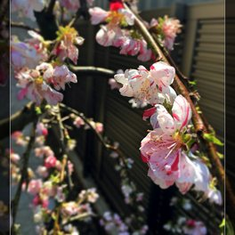
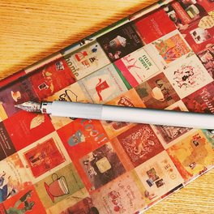
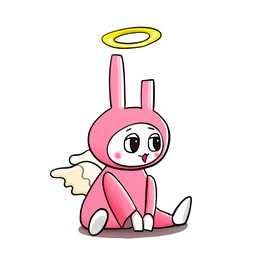
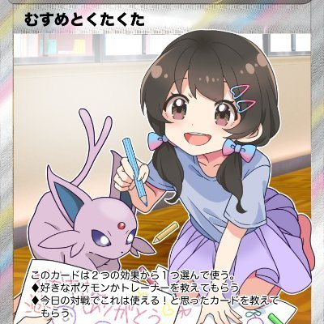
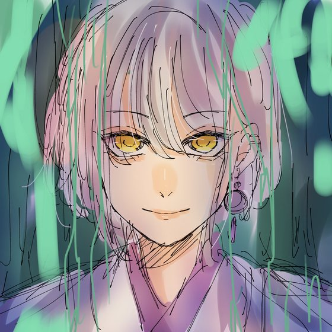

words that move me
Text Overlays
感動した言葉を、流れるように。
触れると止まります
moments on film
Gallery
いつかの思い出だけでなく思考や音や考えが
ぽっと湧き上がりますように
elsewhere
Connection

Flickr 66枚のフォトアーカイブ
Old Blog Ameblo の過去ブログ ブクログ 読書所感 277冊 · 149レビュー
7Witches Trade FX トレードのサイトAnother side
もうひとつの顔

Pokémon Card
ポケカで遊ぶ
ポケモンカードにはまった30代。友だちと都内のあちこちで対戦し、子どもと遊び、可愛いイラストを集めています。好きなポケモンはエーフィ、テールナー、ロコン。
X @pokeasako ↗
アイコン: カヲルさん（@kwr_pkc）

Crypto FX
仮想通貨 FX をトレードする
トレード歴4年目。インジケーターとアラートを生かした、時間をかけないトレード。半裁量の bot 通知サービスを細々と続け、FX トレードのサイト「7Witches Trade」もつくっています。
X @hanata19086 ↗